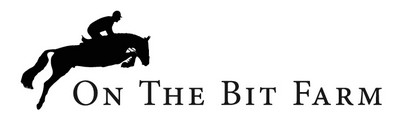
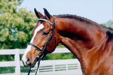
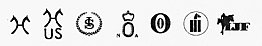
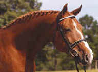

|

Live Foal Guarantee / Stud
Fees $1,500 Brochure and video available. Click on the stallion's name or image below for detailed information and additional photos. |
|
|  |
Paparazzo 1995 Bay 16.3 Elite Hanoverian Pablo - Debütant - Raffael  Paparazzo was a winner at the 2003 C.S.I. International Grand Prix jumping competition in the Youngster Grand Prix Tour (7 & 8 year-olds) in Germany. He also has 10 other career wins in national competition (4 to 5 feet). Paparazzo has fabulous hunter movement, "picture perfect" jumping style and an exceptional disposition. |
|  |
Don
Alfredo 1987 Chestnut 16.2H Elite Hanoverian Don Juan-Archimedes-Alljeder Don Alfredo, sired by 1997 Horse of the Year, Don Juan, is a Class I Stallion who finished the 11 month performance test with 122.88 points with over 120 points in rideability and jumping. Don Alfredo is a beautiful stallion with elegant movement and an incredibly kind disposition. |
Shipping Information
- Collection days are Monday, Wednesday and Friday, must notify On The Bit Farm by 9 PM, the night before shipment goes out.
- Shipped either Federal Express Priority Overnight or same day Delta Dash.
- Shipments are available either in 72 hour Equitainers or disposable Boxes, 2 doses can be shipped per container, with a semen count of 1 Billion motile cells per dose
- All paperwork shipped with semen must be returned to On The Bit Farm immediately in order to honor contract.
You can find some interesting links, and sales horses here.© Copyright 2003 - All rights reserved by On The Bit Farm.